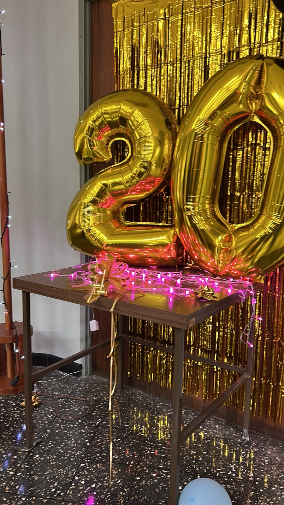
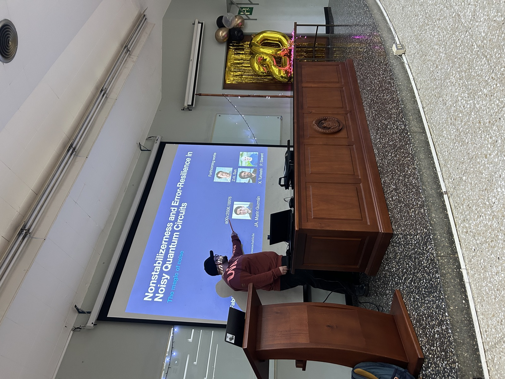
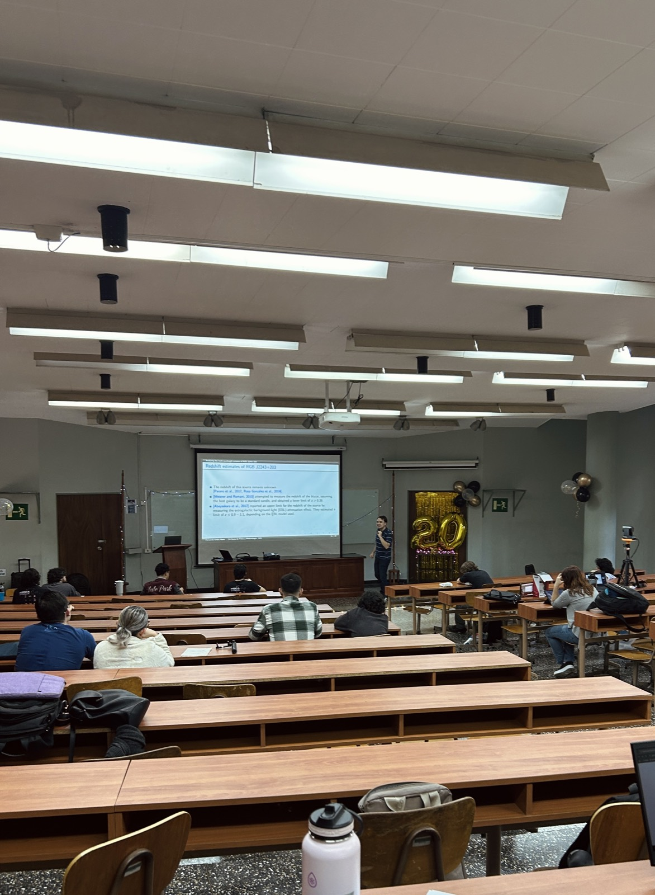
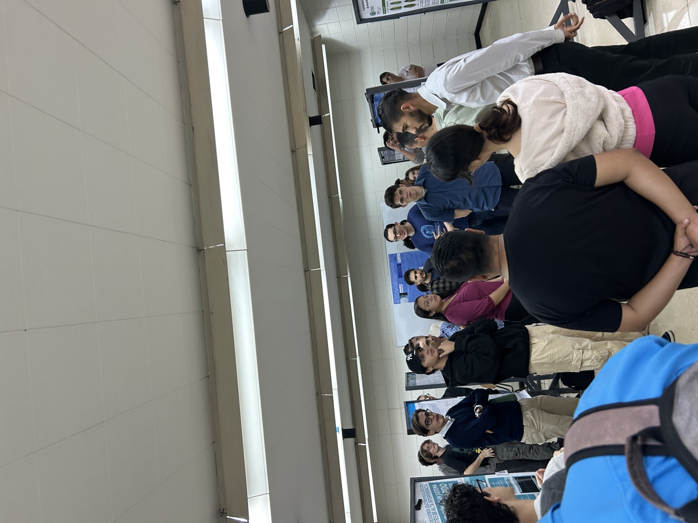
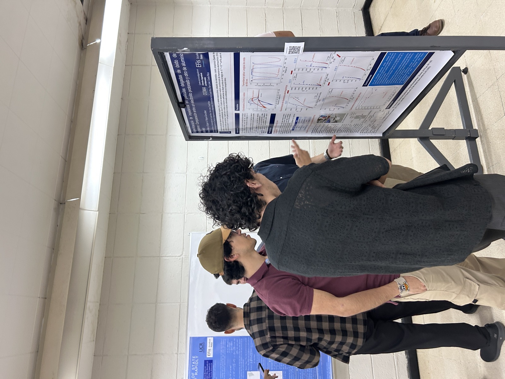
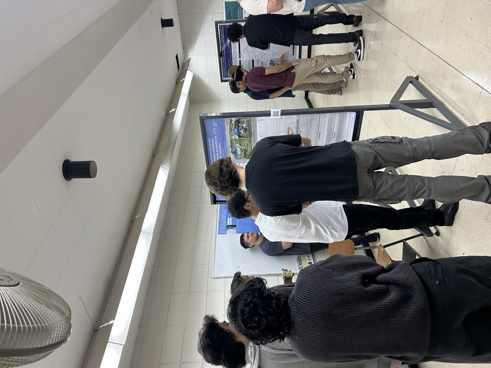
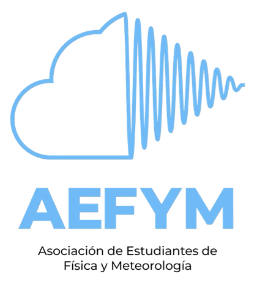
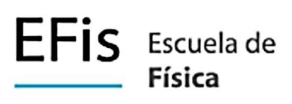
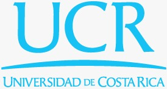

AEFYM · Escuela de Física · Universidad de Costa Rica
21.ª edición24 Horasde Física y Meteorología
Del jueves a la 1 de la tarde al viernes al mediodía, la Escuela de Física se llena de charlas sobre investigación, experiencias académicas y temas de interés en física y meteorología, presentadas por docentes, estudiantes y profesionales.
- Fecha
- Jueves 10
- 13:00 – 22:00
- Viernes 11
- 07:00 – 13:00
- Charlas
- 50 min + 10 min
- Lugar
- Entrada
- Faltan
- —
El evento
Veinticuatro horas de ciencia hecha en Costa Rica
Las 24 Horas de Física y Meteorología son un encuentro que organiza cada año la Asociación de Estudiantes de Física y Meteorología (AEFYM). Esta es su vigésima primera edición.
El programa reúne charlas de 50 minutos sobre trabajos de investigación, trayectorias académicas y temas de interés. Pueden participar docentes, estudiantes y cualquier persona interesada en estas ciencias, tanto en el público como en la tarima.
Veintiún ediciones mostrando que la física y la meteorología están en el pronóstico de mañana, en un hospital, en un chip y en el mar.AEFYM · Escuela de Física, UCR
Edición anterior · diciembre 2025
Así fue la 20.ª edición
Charlas en el auditorio, una sesión de pósters llena de preguntas y muchas conversaciones en los pasillos.






Proponga su charla y forme parte de la próxima edición.
Proponer una charlaTemáticas
Cuatro ejes del encuentro
Las charlas se agrupan en cuatro ejes. Seleccione uno para ver qué incluye.
Docentes y estudiantes de la Escuela investigan en estos centros de la Universidad de Costa Rica.
- CIGEFI
Centro de Investigaciones Geofísicas. Atmósfera, clima y otros fenómenos geofísicos.
Física de la atmósfera · Clima · Pronóstico · Hidrometeorología - CICANUM
Centro de Investigación en Ciencias Atómicas, Nucleares y Moleculares. Radiaciones y sus aplicaciones.
Física nuclear · Física médica - CICIMA
Centro de Investigación en Ciencia e Ingeniería de Materiales. Desarrollo y caracterización de materiales.
Ciencia de materiales - CINESPA
Centro de Investigación Espacial. Física espacial, astronomía y ciencias del espacio.
Astrofísica · Física espacial - CIMAR
Centro de Investigación en Ciencias del Mar y Limnología. Su Módulo de Información Oceanográfica (MIO) pronostica oleaje, viento y mareas en las costas del país.
Oceanografía física
La AEFYM organiza clubes donde el estudiantado desarrolla habilidades blandas y herramientas profesionales.
Programación
Python y herramientas científicas para analizar datos, simular y automatizar.
Currículum y perfil profesional
Cómo presentar su experiencia para becas, posgrados y empleos.
Olimpiadas de Física
Preparación y acompañamiento para competencias nacionales e internacionales.
Habilidades blandas
Comunicación, trabajo en equipo y presentación de resultados en público.
Áreas de la meteorología y las ciencias del océano.
Física de la atmósfera
Radiación, nubes, lluvia y los procesos físicos que ocurren en la atmósfera.
CIGEFIPronóstico del tiempo
Frentes, ondas tropicales y ciclones: cómo se comportan y cómo se pronostican.
CIGEFIClima y cambio climático
Comportamiento del clima a largo plazo, su variabilidad, como El Niño, y sus cambios.
CIGEFIOceanografía física
Corrientes, oleaje, mareas y la interacción entre el océano y la atmósfera.
CIMAR · MIOHidrometeorología
Relación entre la lluvia, los ríos y el agua disponible, clave para la gestión de riesgo y la energía.
CIGEFICiencia de datos
Estadística, programación y aprendizaje automático aplicados a datos de estaciones, satélites y modelos.
Áreas de la física que se trabajan en la Escuela y sus centros.
Ciencia de materiales
Propiedades de sólidos, semiconductores y materiales nuevos, desde su estructura atómica hasta sus aplicaciones.
CICIMAFísica nuclear y médica
Radiación y técnicas nucleares aplicadas a la salud, el diagnóstico por imágenes y la protección radiológica.
CICANUMAltas energías y partículas
Partículas fundamentales y sus interacciones, con datos de grandes colaboraciones internacionales.
Física teórica
Modelos matemáticos que describen la naturaleza, de la mecánica cuántica a la gravitación.
Óptica
Comportamiento de la luz y su uso en láseres, sensores, imágenes y comunicaciones.
Biofísica
Física aplicada a sistemas vivos: proteínas, células y procesos biológicos.
Astrofísica
Estrellas, galaxias y fenómenos del espacio a partir de observaciones y modelos.
CINESPACosmología
Origen, estructura y evolución del universo a gran escala.
Física computacional
Simulaciones y métodos numéricos para problemas que no se pueden resolver a mano.
Por qué importa
Más presentes de lo que parece
La física y la meteorología sostienen tecnologías, decisiones y empleos muy concretos. Seleccione un tema.
Casi toda la tecnología que usamos empezó como una pregunta de física.
Mito frecuenteQue la física solo sirve para dar clases o estudiar el universo. La carrera enseña a modelar, programar y resolver problemas complejos, habilidades que buscan muchas industrias.
El teléfono celular
Chips, pantallas y baterías salen de la física de semiconductores y de materiales.
GPS
Sin las correcciones de la relatividad, la ubicación en el mapa se desviaría kilómetros cada día.
Salud
Rayos X, resonancia magnética y radioterapia son física médica que se usa a diario en los hospitales.
Energía
Hidroeléctricas, geotermia y paneles solares, la base de la electricidad renovable de Costa Rica.
Internet
La fibra óptica transmite datos con luz. La óptica y los láseres hacen posible cada videollamada.
Sismos y volcanes
La geofísica ayuda a entender y vigilar los fenómenos que más afectan al país.
En un país tropical con dos vertientes, la atmósfera define buena parte del día.
DatoUn pronóstico combina física, matemáticas, observaciones de estaciones y satélites, y modelos que corren en supercomputadoras.
Agricultura
Saber cuándo llueve define cuándo sembrar, cosechar o regar café, piña o arroz.
Gestión de riesgo
Pronosticar lluvias intensas y ciclones permite emitir alertas a tiempo.
Aviación y navegación
Cada vuelo y cada salida al mar dependen de información meteorológica y oceanográfica.
Agua y energía
Las lluvias llenan los embalses que generan buena parte de la electricidad.
Cambio climático
Entender el clima ayuda a prepararse para sequías, El Niño y eventos extremos.
Salud y turismo
Calor extremo, calidad del aire y radiación UV afectan a las personas y a la economía.
¿Dónde trabaja una persona graduada en física o meteorología?
Lo que más se valoraPlantear bien un problema, analizar datos y comunicar resultados.
Investigación y docencia
Universidades, centros de investigación y colaboraciones internacionales.
Ciencia de datos
Análisis, modelado y programación en tecnología, banca, seguros y consultoría.
Industria
Semiconductores, dispositivos médicos, óptica, instrumentación y control de calidad.
Física médica
Radioterapia, protección radiológica e imágenes médicas en hospitales.
Servicios meteorológicos
Pronóstico, climatología y alertas en instituciones públicas y empresas.
Energía y ambiente
Energías renovables, eficiencia energética, evaluación ambiental y política climática.
Programa
Jueves 13:00 a viernes 13:00
Cada charla dura 50 minutos. Entre una y otra hay 10 minutos para que la siguiente persona prepare su presentación. El programa puede tener cambios.
Jueves 10 DIC · 13:00 – 22:00
El Nobel de Física 2026: Halzen, neutrinos y una nueva ventana al universo
Dra. Vanessa López Barquero
Láseres de fibra ultrarrápidos: diseño y aplicaciones
Taina Ramírez Cortés
El Sol y sus ciclos
Heidy Gutiérrez
Receso
Tu formación en física es un superpoder. Aprende a usarlo
David Granados González
Currículum y entrevistas para la industria tecnológica
Optics Chapter UCR
Cena y tiempo libre
Temperatura superficial del mar en el Pacífico y el Caribe de Costa Rica
Óscar Álvarez Poveda
Viernes 11 DIC · 07:00 – 13:00
Predicción de eclipses por medio de machine learning
Andrew Vargas
Desayuno y tiempo libre
Predicción de eclipses solares mediante métodos geométricos
Oscar Güell Zavaleta
Inteligencia artificial: una mirada desde la física teórica y el fin del universo
Hugo Solís
¿Qué es una teoría de Yang–Mills? El nacimiento del lenguaje del Modelo Estándar
Sebastián Venegas Marchena
- Cierre
El Universo y la termodinámica cuántica: más por menos
Alejandro Jenkins
Feria de proyectos estudiantiles
Coordina Alexander Sancho Dive
Convocatoria abierta. Docentes, estudiantes y otras personas interesadas pueden proponer una charla sobre su investigación, su experiencia académica o un tema de interés.
Proponer una charlaEmpresas e instituciones
Participe en las 24 Horas
El público del evento son estudiantes de Física y de Meteorología de la UCR, docentes e investigadores. Su organización puede acercarse a ellos de varias formas.
Dar una charla
Cuente qué hace su equipo y qué problemas resuelve con física, meteorología o análisis de datos.
Patrocinar
Apoye con refrigerios, materiales o reconocimientos para ponentes y participantes.
Conocer talento
Converse con estudiantes que programan, modelan, analizan datos y trabajan con instrumentación.
Abrir colaboraciones
Prácticas, trabajos finales de graduación o proyectos conjuntos con la Escuela.
Organizan

AEFYM'">
Escuela de Física'">
UCR'">Contacto
Escríbanos
Para proponer una charla, colaborar con la organización o hacer cualquier consulta.
Escanee el código para abrir el formulario de la convocatoria.